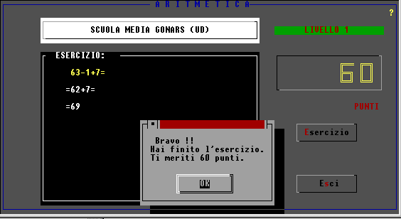
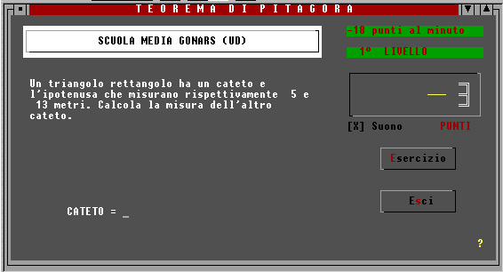
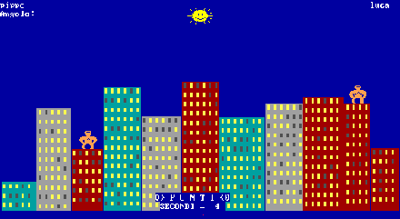
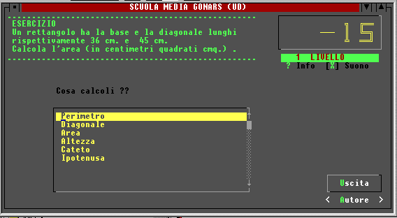

ESERCIZI VARI
Esigenze Hardware :sono stati adoperati con computer monocromatici
286 senza HD.
Si possono installare nel dischetto insieme al sistema operativo (DOS...)
Vedi codice sorgente

Applicazione
Teorema Pitagora
Vedi codice sorgente

Vedi codice sorgente

Vedi codice sorgente

con un certo punteggio ...... si gioca!
Il gioco ha una durata programmata.
Il gioco
non è lavoro mio, si tratta di gorillas
(autori XX sorgente disponibile con DOS??)
Vedi codice sorgente

Vedi codice sorgente

del programma di Geometria ( 237 K)